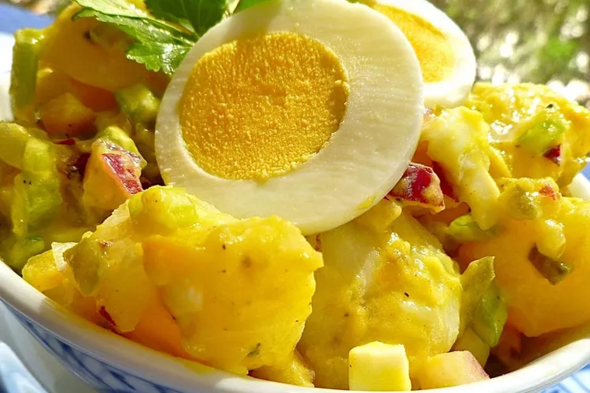

Potato Salad

Let's make this tasty dish!
Potato Salad ingredients:
- Potatoes: It's not potato salad without potatoes. The recipe doesn't specify what size potatoes or what kind, so choose medium-size potatoes, or enough to serve eight. As far as what kind of potatoes to use for potato salad, I'll cover that in the next section.
- Eggs: Hard-boiled eggs are a must-have for this kind of old-fashioned potato salad, but you can leave them out if you really want to.
- Celery: Celery adds a crunchy element to balance the softer texture and creaminess of the potatoes.
- Onion: You can use any onion you like, including yellow, white, or red onions. Chop the onion into small, uniform pieces so no one bites into a big chunk of raw onion.
- Relish: Use your favorite sweet pickle relish. Some reviewers chopped up sweet gherkin pickles, or substitute relish or pickles that are less sweet.
- Mayonnaise: This is the creamy element that brings all the ingredients together. For best results, mix the mayonnaise, mustard, relish, and seasonings together in a separate bowl. Give it a taste test and adjust the seasonings before adding to the potatoes, eggs, and onion.
- Mustard: Use your favorite mustard. Some reviewers like to use yellow mustard and some prefer Dijon.
- Seasonings: This recipe calls for garlic salt, celery salt, and ground black pepper to taste; some reviewers added extras like paprika and garlic powder. You can add minced herbs, too, like dill, chives, parsley, and tarragon.
Step by step directions:
- Gather all ingredients.
- Bring a large pot of salted water to a boil. Add potatoes and cook until tender but still firm, about 15 minutes.
- Drain, cool, peel, and chop potatoes.
- While potatoes cook, place eggs in a saucepan and cover with cold water. Bring water to a boil; cover, remove from heat, and let eggs stand in hot water for 10 to 12 minutes.
- Remove from hot water, cool, peel, and chop eggs.
- Combine the potatoes, eggs, celery, onion, relish, mayonnaise, mustard, garlic salt, celery salt, and pepper in a large bowl. Mix together well and refrigerate until chilled.